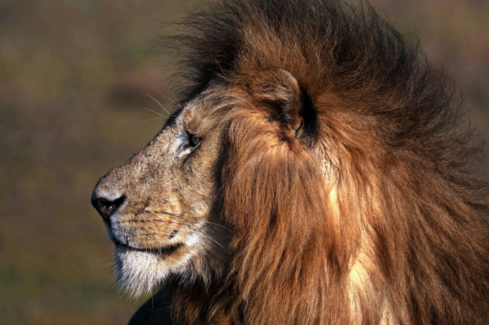
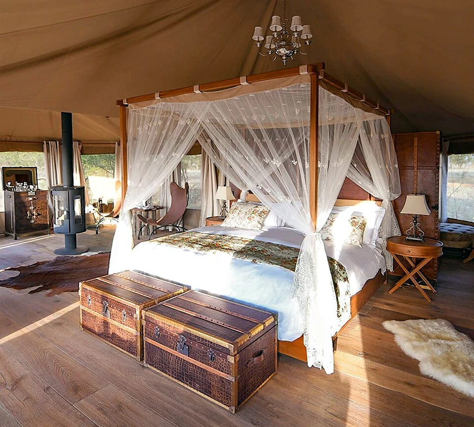

East Africa
East AfricaMatchday meets the wild
Bring your colours. Leave with a few new stories.
Explore this journey
EAST AFRICA IS CALLING
Three beautiful countries. One unforgettable journey.
Follow the football, then find your own trail.
BEYOND THE STADIUM
The roar of the crowd. The quiet of the plains. A new city, a familiar smile, a journey you didn’t quite expect.
Bring together your stay, transfers and safari ideas across East Africa. Start with a country. Make the rest your own.
Meet your next destinationTHREE COUNTRIES. ENDLESS POSSIBILITIES.
Let football bring you to East Africa. Make space for everything else that makes the journey worthwhile.
Explore the travel guideTHIS IS WHAT YOU COME FOR
Bring your colours. Find your people. Make the match the centre of your East African journey.
Start with your host city and confirmed fixtures. Add a place to stay, matchday transport and a safari for the days between the games.
A FEW WAYS TO GO
East AfricaBring your colours. Leave with a few new stories.
Explore this journey Uganda
UgandaThe floodlights of Hoima. The wild beyond the whistle.
Explore this journeyA little city life. A lot of open sky.
Explore this journey
Real accommodation photograph: One Nature Nyaruswiga, Tanzania. Example only; no affiliation.
TAKE THE SCENIC ROUTE
A calm arrival. A place that feels right. A guide for the day. Bring the details together, so the trip can feel like a holiday.
Stays, transfers & moreLET THE NEXT CHAPTER BE AFRICA
Come with a plan, or just the beginnings of one. There’s a trail for that.
Start planning